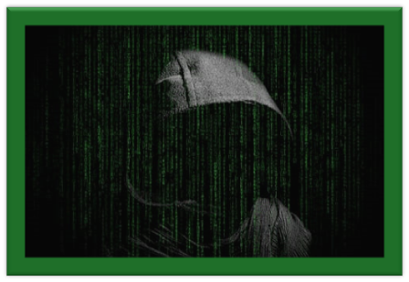

Wat is hacken?
Hacken betekent dat je probeert toegang te krijgen tot een computer, website, app of netwerk zonder dat je daar toestemming voor hebt. Dat kan op allerlei manieren, bijvoorbeeld door een wachtwoord te raden, een virus te gebruiken of iemand te misleiden met een nepbericht om zo zijn gegevens te krijgen, dat heet phishing. Veel mensen denken bij hacken meteen aan iets illegaals of gevaarlijks, maar dat is niet altijd zo. Het hangt helemaal af van wat je ermee doet en met welke bedoeling.
Is hacken strafbaar?
Als je zonder toestemming in een systeem inbreekt, ben je strafbaar, ook als je niks kwaads van plan was. In Nederland staat dit in de wet. Zelfs als je alleen maar “wilde kijken of het lukte” of denkt “ik verwijder alles netjes weer”, kun je toch in de problemen komen. Je kunt een boete krijgen, een strafblad of zelfs de gevangenis in. En ja, ook jongeren kunnen hiervoor gestraft worden. Daarom is het belangrijk om goed te weten wat wel en niet mag, en wat de gevolgen zijn.
Witte, grijze en zwarte hackers
Er zijn verschillende soorten hackers. Niet allemaal zijn ze slecht. De witte hackers, ook wel ethische hackers genoemd, helpen juist. Ze zoeken op een eerlijke manier naar fouten in systemen, met toestemming van het bedrijf of de organisatie. Als ze een probleem vinden, melden ze dat, zodat het opgelost kan worden. Zo maken ze het internet veiliger. Grijze hackers zitten er een beetje tussenin. Ze breken wel in zonder toestemming, maar doen dat niet om schade aan te richten. Soms proberen ze gewoon iets uit of willen ze laten zien dat er een fout in het systeem zit. Maar omdat ze geen toestemming hadden, is het alsnog strafbaar. Zwarte hackers zijn echte cybercriminelen. Zij hacken om geld te verdienen, gegevens te stelen, mensen af te persen of systemen kapot te maken. Denk aan mensen die ransomware verspreiden of aan grote datalekken.
Werken bij de politie
Wist je dat je later als hacker bij de politie kunt werken? Er zijn speciale teams, zoals het Team High Tech Crime van de Nederlandse politie, die zich bezighouden met cybercriminaliteit. Ze sporen hackers op, onderzoeken digitale sporen en beschermen mensen tegen internetcriminelen. Daarvoor moet je veel leren over computers, netwerken en digitale veiligheid. Maar als je het interessant vindt om met techniek te werken en je wilt iets goeds doen voor de maatschappij, dan is dat misschien wel een toffe baan voor jou.
Wat zijn de gevaren en gevolgen?
Hacken kan serieuze gevolgen hebben, vooral als het zonder toestemming gebeurt. Stel je voor: iemand breekt in op een website en haalt daar privégegevens van mensen vandaan – zoals hun wachtwoorden, adressen of zelfs bankgegevens. Dat kan heel vervelend of zelfs gevaarlijk zijn. Ook kunnen bedrijven hierdoor geld verliezen of klanten kwijtraken. Soms worden websites platgelegd of computers zo besmet dat ze niet meer goed werken. Voor de mensen of organisaties die gehackt zijn, levert dat veel stress, tijd en schade op.
Waarom hacken mensen?
Mensen gaan om verschillende redenen hacken. Sommigen doen het uit nieuwsgierigheid: ze willen gewoon weten hoe iets werkt of of ze ergens binnen kunnen komen. Anderen zien het als een uitdaging of wedstrijdje, bijvoorbeeld: “Kijk mij eens slim zijn.” Er zijn ook hackers die het doen voor het geld, bijvoorbeeld door toegang tot betaalgegevens te krijgen of mensen af te persen. Soms wordt er gehackt uit woede of wraak, bijvoorbeeld als iemand boos is op een school of werkgever. En er zijn natuurlijk ook hackers die het doen om anderen te helpen, zoals de witte hackers.
